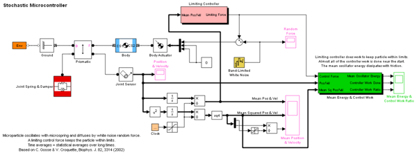

Stochastic Microcontroller
Modified Brownian motion: A microparticle oscillates with a linear damped microspring while diffusing by the addition of a random white noise force. A microcontroller applies a control force that tries to keep the particle within predefined limits.
The system is ergodic: Averages are computed as time averages and assumed to be equal to statistical ensemble averages over long times. Based on a magnetic microtweezer system for biophysics research.
